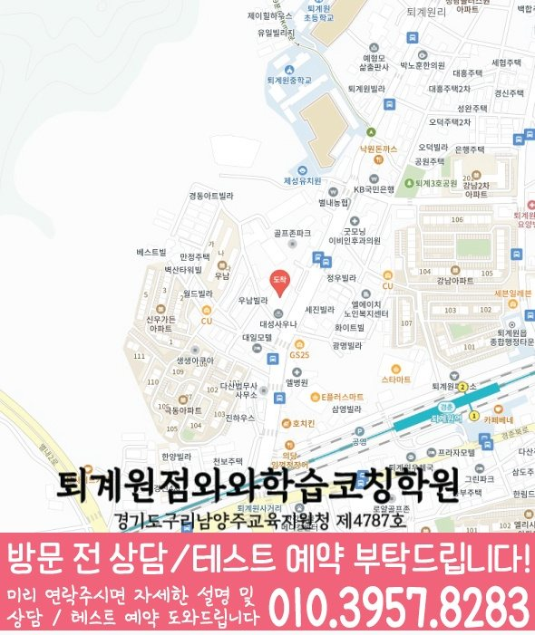

Elementary school Korean · English · Math
퇴계원읍 초등학생 국영수학원
퇴계원읍 초등학생 국영수학원 선택 전 교과 진도와 기초 학습 자료, 최근 오답과 과목별 가능 학년, 센터 위치·비용 확인 기준을 안내합니다.
01 Quick answer
퇴계원읍에서 먼저 확인할 내용
퇴계원읍에서 초등학생 국영수학원을 찾는다면 와와학습코칭센터 퇴계원점의 과목별 가능 학년을 먼저 확인하세요. 제공된 초등학교 참고 자료와 학생의 실제 교재를 대조하고, 학생의 실제 풀이 기록에 맞게 세 과목을 같은 분량으로 늘리기보다 과목별 완료 기준과 재확인 날짜를 정해야 합니다.
대표 학생 상황
세 과목의 과제 순서와 오답 복습 시점을 스스로 정리하기 어려운 초등학생


010-6839-8283상담 전 핵심 안내
퇴계원읍에서 초등학생 학원을 찾는 학생과 학부모님을 위해 지역 센터의 학습 흐름을 안내합니다. 영어·수학은 물론 국어와 영어·수학 연계까지, 현재 실력 진단부터 개념 정리, 문제풀이, 오답 관리가 이어지도록 수업과 코칭을 구성했습니다. 학생마다 목표와 학습 속도를 다르게 확인해 학습 기록이 이어지도록 돕습니다. 퇴계원읍 학부모가 초등학생 국영수 수업을 찾을 때 첫 질문은 과목 수보다 현재 공백이 무엇인지입니다. 퇴계원읍 초등학생 국영수학원 기준에서 먼저 볼 부분은 막연한 설명보다 아이가 오늘 배운 내용을 설명하고 내일 다시 풀 수 있게 만드는 관리 구조입니다.
처음 상담에서 구분할 학습 과제
퇴계원읍 수업 내용을 점검할 때는 진단 결과를 바탕으로 학습 상태를 구체적으로 확인합니다. 처음부터 문제만 반복하지 않고, 개념 이해도와 풀이 습관을 먼저 점검해 퇴계원읍 초등학생에게 맞는 학습 순서를 잡습니다.
영어·수학 중심 + 국어 기본기. 영어는 어휘·문장 이해·기초 문법 흐름을 점검하고, 수학은 개념·유형·오답 원인을 분류해 관리합니다. 국어는 독해 습관과 핵심 문장 파악을 함께 잡습니다.
퇴계원읍 초등학생 학습 점검의 수업 설계는 국어 요약, 영어 듣기, 수학 서술형 영역을 각각 따로 보되 서로 영향을 주는 부분까지 연결해야 합니다. 경기도 남양주시 퇴계원읍에서 해당 학년대의 초등학생이 국어에서 근거 찾기를 놓치면 영어 지문의 질문 의도도 흐려질 수 있고, 수학 문장제에서도 조건을 빠뜨릴 가능성이 커집니다. 영어는 암기한 단어 수와 함께 읽기 지문에서 뜻을 다시 꺼내는 힘을 확인해야 합니다. 수학은 계산량보다 개념을 말로 설명하고 풀이 순서를 남기는 연습이 중요하므로, 퇴계원읍 초등학생 학습 과정에서는 과목별 진도와 복습 기록을 함께 비교해 보는 것이 좋습니다.
질문과 기록으로 확인하는 학습 과정
설명보다 이해를 우선합니다. 학생이 어디에서 막히는지 질문과 풀이 과정을 통해 확인한 뒤, 개념을 다시 연결해 이해가 남도록 지도합니다.
학습 태도까지 함께 봅니다. 숙제·복습·오답 정리 습관을 점검하고, 수업이 끝나도 학습이 이어지도록 관리합니다. 국어·영어·수학 학습 루틴도 함께 잡습니다.
퇴계원읍 초등학생 학습 과정을 비교하면서 가장 조심할 부분은 결과를 단정하는 문구만 보고 결정하는 일입니다. 퇴계원읍에서 현재 학년의 초등학생에게 필요한 것은 몇 달 뒤 성적을 보장한다는 말보다 오늘의 오답, 이번 주의 복습, 다음 달의 단원 계획이 이어지는 구조입니다. 같은 지점에서 자주 멈추는 아이는 문제를 많이 풀어도 실수가 반복될 수 있으므로, 퇴계원읍 초등학생의 국어·영어·수학 학습 점검 상담에서는 문제량과 설명 방식, 피드백 기록을 함께 질문해야 합니다. 학부모가 비교해야 할 기준은 설명의 양이 아니라 경기도 남양주시 퇴계원읍 아이의 생활 시간표 안에서 꾸준히 실행될 수 있는 학습 관리입니다.
퇴계원읍 초등학교 자료를 수업 계획에 반영하는 방법
센터 안내와 비교할 때, 제공 자료에는 퇴계원초등학교·도제원초등학교가 초등학교 참고 정보로 정리되어 있습니다. 상담 전에 정리해 보면, 학교 이름은 상담의 출발점으로만 사용하고 실제 시험·교과 자료를 함께 확인합니다.
상담 자료를 정리하면, 학교 자료는 이름 나열보다 활용 방식이 중요합니다. 실제 학습 범위를 확인하면, 퇴계원읍 초등학생의 교과 진도·알림장·단원평가 자료에서 과목별 범위와 어려운 문제를 표시해 상담 계획과 대조하는 편이 좋습니다.
진단에서 재확인까지의 학습 순서
1. 현재 수준 확인. 학년, 학교 진도, 최근 학습 결과를 바탕으로 부족한 단원과 자주 틀리는 유형을 확인합니다.
2. 개념 정리와 유형 학습. 바로 문제풀이로 넘어가기보다 핵심 개념을 먼저 정리하고, 대표 유형부터 훈련형 문제까지 단계적으로 연습합니다. 퇴계원읍 과목별 점검에서는 진단 결과를 바탕으로 다음 학습 계획을 조정합니다.
3. 오답 관리와 학습 피드백. 틀린 문제를 다시 푸는 데서 끝내지 않고, 왜 틀렸는지(개념 부족/실수/독해 문제 등)를 정리해 다음 풀이 전략까지 제공합니다.
초등 국어·영어·수학 관리 기준은 많은 과목을 동시에 시키는 선택지로만 이해하면 판단이 흐려집니다. 경기도 남양주시 퇴계원읍의 방학과 학기 중 학습 리듬이 크게 달라지는 가정이라면 아이가 같은 실행 문제를 겪는지, 아니면 단순히 숙제 시간이 부족한지부터 나누어 보아야 합니다. 현재 과정의 초등학생에게는 국어 독해가 느려지면 영어 지문 이해와 수학 문장제까지 같이 흔들릴 수 있어, 퇴계원읍 초등 학습 상담에서는 과목별 약점과 생활 루틴을 함께 확인하는 과정이 필요합니다. 특히 퇴계원읍 초등학생 학습 점검에서 같은 학습 행동을 보이는 아이는 수업의 난이도보다 시작, 풀이, 채점, 질문의 순서를 몸에 익히는지가 더 중요한 기준이 됩니다.
학년 변화에 따라 달라지는 점검 항목
초등. 퇴계원읍 복습 계획에서는 최근 풀이 기록을 바탕으로 다음 학습 계획을 조정합니다. 퇴계원읍 초등학생 상담에서는 과목별 오답 원인을 최근 결과와 비교해 다음 과제에 반영합니다.
저학년(1~3학년). 퇴계원읍 과목별 점검에서는 다시 풀기 결과를 바탕으로 상담에서 확인할 기준을 정리합니다. 국어는 지문을 읽고 핵심을 찾는 습관을 반복 훈련합니다.
고학년(4~6학년). 수학은 단원별 유형을 단계별로 반복하고, 영어는 문장 구조와 기초 문법을 정확히 다집니다. 국어 독해·서술형 대비를 함께 진행해 서술 답안의 근거를 만들도록 합니다.
영수/교과 평가 대비. 학교 시험 범위와 제공된 시험지의 문항 유형에 맞춰 복습 계획을 조정하고 우선순위를 제시합니다. 실수 유형, 자주 틀리는 개념, 오답 패턴을 시험 전 집중 점검합니다.
퇴계원읍 지역 센터는 초등학생의 현재 학습 상태를 기준으로 필요한 과목을 정리하고, 상담을 통해 영어·수학·국어 학습 방향을 자세히 정리합니다.
학습 시작 시각은 퇴계원읍 국어·영어·수학 점검을 볼 때 수업 이름보다 실제 운영 방식을 확인하라는 신호로 볼 수 있습니다. 국어·영어·수학을 함께 계획해도 퇴계원읍 아이의 기초 상태에 따라 과목별 과제와 보충 설명을 다르게 정해야 합니다. 퇴계원읍 초등학생 학습 과정에서 학습 관리는 수업 출석만 확인하는 일이 아니라, 아이가 배운 내용을 어떤 문제에서 사용했고 어느 부분을 다시 봐야 하는지 남기는 과정입니다. 초등학생에게는 많은 숙제보다 오답을 짧게 반복하고 질문을 남기는 흐름이 도움이 됩니다.
02 Consultation examples
퇴계원읍 학부모 상담 상황 예시
아래 내용은 실제 고객 후기나 성적 결과가 아니라, 상담에서 확인할 질문을 이해하기 위한 상황 예시입니다.
퇴계원읍 초등학생의 상담을 가정한 예시입니다. 국어·영어·수학 점수만 비교하지 않고 시작이 늦어진 과제, 반복한 오답과 학교 일정을 나누어 본 뒤 이번 주에 실행할 한두 가지를 정리합니다.
퇴계원읍에서 제공된 초등학교 참고 정보인 퇴계원초등학교·도제원초등학교의 목록과 학생의 실제 학교 자료를 대조해 질문하는 상담 예시입니다. 센터의 개설 과목과 가능 학년을 확인한 뒤 학생의 귀가 시간, 과제량과 시험 기간 보강 기준을 같은 메모에 정리합니다.
03 FAQ
퇴계원읍 초등학생 국영수학원 자주 묻는 질문
학부모님이 상담 전에 자주 확인하는 내용을 질문과 답변으로 정리했습니다.
퇴계원읍 초등학생 국영수학원 상담은 어떤 학생에게 도움이 될 수 있나요?
그날 공부할 순서를 정하는 연습이 필요하다면 현재 교재와 과제 기록을 준비하세요. 퇴계원읍 상담에서는 아이가 혼자 시작할 수 있는 분량부터 확인합니다.
퇴계원읍에서 세 과목 계획을 한꺼번에 세워도 괜찮을까요?
퇴계원읍 상담에서는 먼저 최근 자료에서 가장 시급한 과목을 찾고, 나머지 과목의 최소 복습 시간을 남겨야 합니다. 오답은 설명 직후가 아니라 일정 시간이 지난 뒤 다시 풀어 적용 여부를 확인합니다. 초등 교과에서는 읽기·어휘·계산 기초와 스스로 공부를 시작하는 습관을 함께 살핍니다.
퇴계원읍 학교별 교과 자료는 어떤 방식으로 확인하나요?
퇴계원읍의 초등학교 참고 정보에는 퇴계원초등학교·도제원초등학교 등이 표시됩니다. 학교 목록보다 학생의 현재 교과 진도·알림장·단원평가 자료와 센터 운영 범위를 대조하는 과정이 우선입니다. 상담에는 알림장과 단원평가처럼 학생이 실제 사용하는 교과 자료를 준비하는 편이 좋습니다.
퇴계원읍 센터에 문의할 때 주소와 가능 학년을 함께 물어봐야 하나요?
실제 방문 위치는 위 센터 확인 정보에서 확인할 수 있습니다. 퇴계원읍 방문 전에는 센터별 교습비 확인 버튼에서 제공 자료를 볼 수 있습니다. 실제 개설 과목, 가능 학년과 수업 시간을 한 번 더 확인하는 편이 정확합니다.
04 Continue
퇴계원읍 페이지 이동
카테고리 전체 지역 또는 앞뒤 지역 안내로 이동할 수 있습니다.